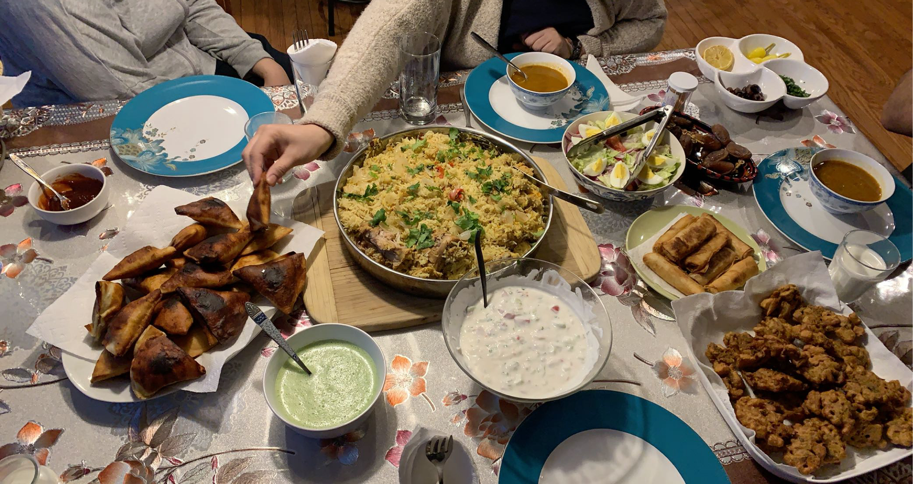
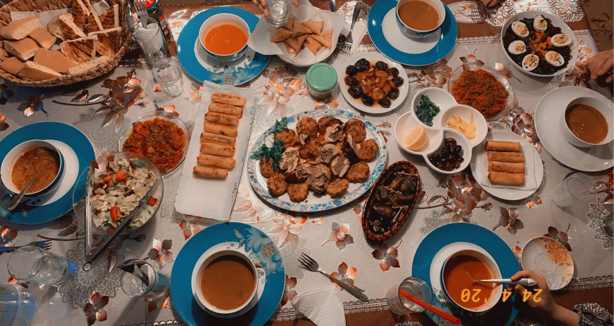
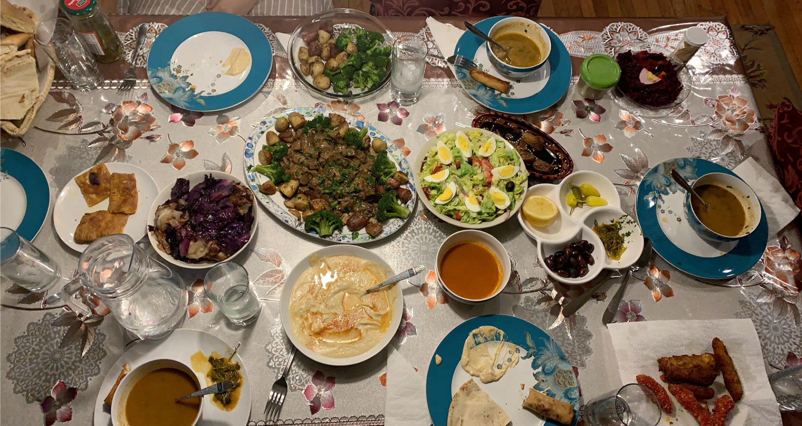
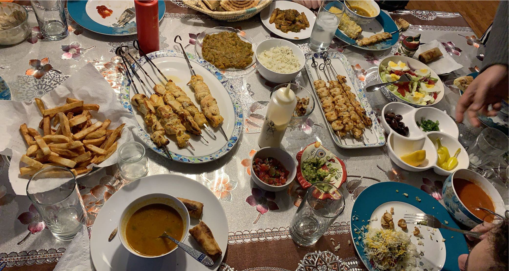
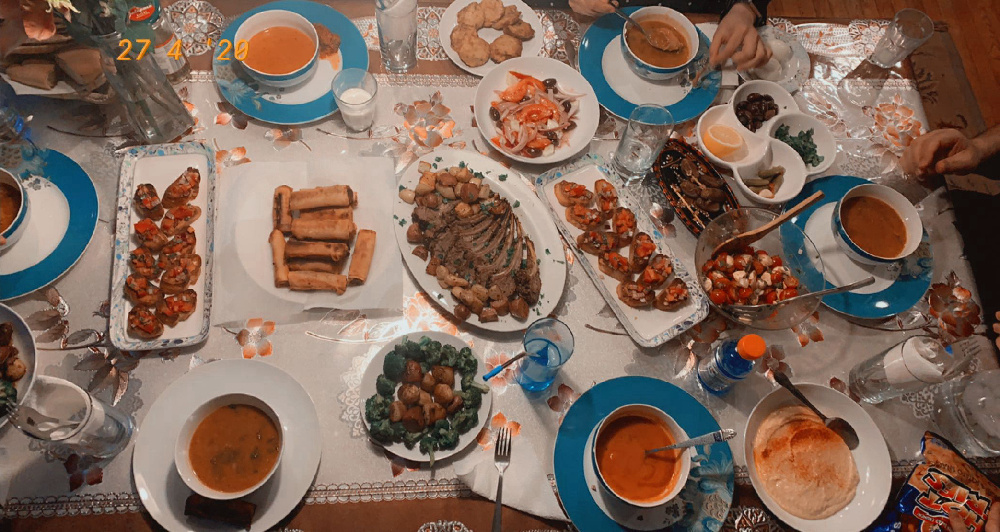
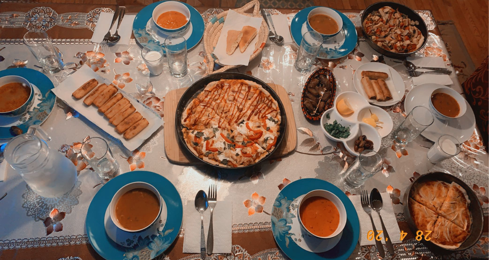
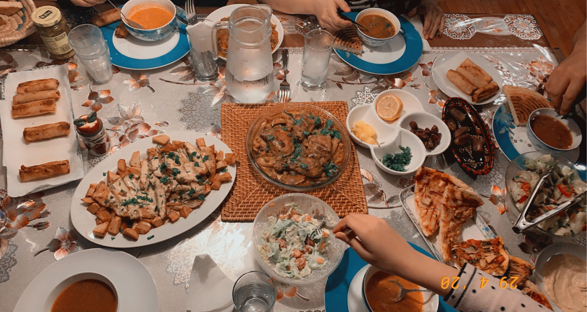
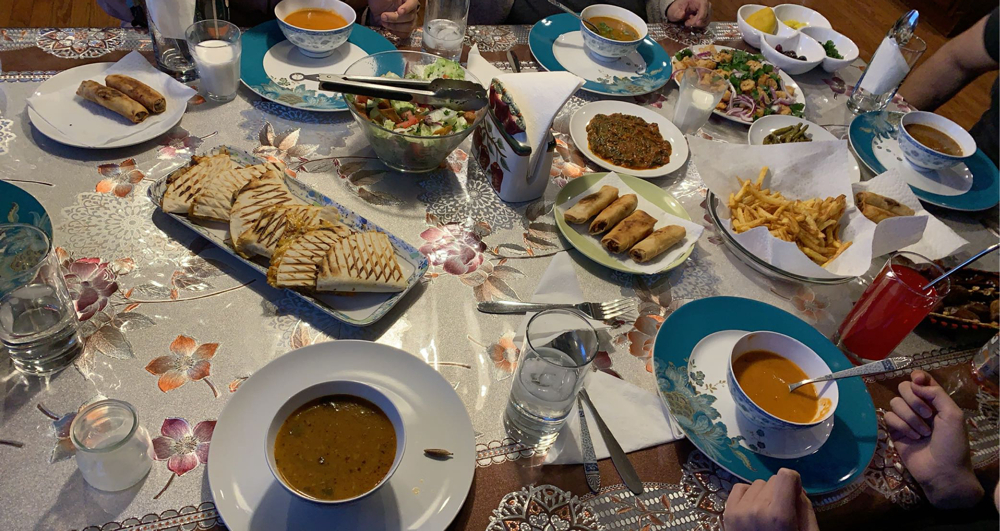
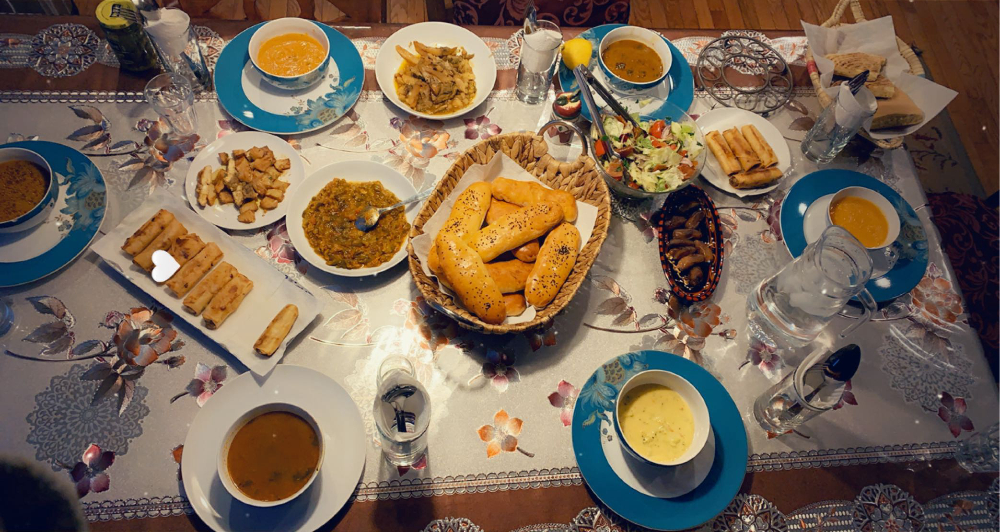

Ramadan is an excellent time period where we are consistently cooking and trying new things. Ramadan is the holy month we observe as muslims every year where we fast from sunrise until sunset and break our fast with a large meal. Our meals will typially always include a soup, salad, and Algerian Burak (like an eggroll) and then what ever the main and side dishes we decide we want to cook and serve that day. Here are a few images of our dinner tables we had throughout the month of Ramadan last year.








